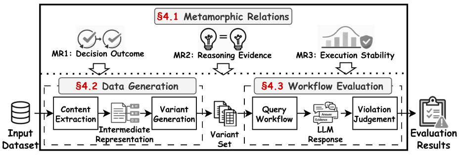

A personal academic homepage
Xianyun Cheng
MSc Mechanical Engineering · National University of Singapore
I am an MSc student in Mechanical Engineering at the National University of Singapore. My research focuses on trustworthy AI: making AI systems robust, safe and reliable in real-world use. I am fortunate to work with Prof. Yang Liu (NTU) and Dr. Tianlin Li (Beihang University).
In the long run, I am interested in safe and reliable AI for the physical world, where engineering and AI meet.
Research interests
- Trustworthy AI and the safety of LLM-based systems
- Testing and evaluation of AI systems
- AI for engineering and manufacturing
Latest news
- Oct 2026
- Our paper on format robustness of LLM document workflows is presented at ASE 2026 in Munich.
- Sep 2026
- Started my MSc in Mechanical Engineering at the National University of Singapore.
- Aug 2026
- Paper accepted to ASE 2026, the 41st IEEE/ACM International Conference on Automated Software Engineering.
- Jun 2026
- Graduated with a First Class Honours BEng (University of Dundee) and a BEng from Central South University.
Publication
Not as Sweet by Another Name: An Empirical Study of Format Robustness in LLM Document Workflows
The 41st IEEE/ACM International Conference on Automated Software Engineering (ASE) · 2026Accepted
A format-aware metamorphic testing framework for LLM document workflows. Across 48,000 executions, changing only the file format cut accuracy by up to 53.63% and flipped decisions in over 41% of cases; lightweight test-time safeguards recovered up to 44.21% of the drift without retraining.

BibTeX
@inproceedings{zhang2026notsweet,
title = {Not as Sweet by Another Name: An Empirical Study of
Format Robustness in LLM Document Workflows},
author = {Zhang, Xiaoyu and Cheng, Xianyun and Li, Tianlin and
Zheng, Yuwei and Yang, Yue and Liu, Yang},
booktitle = {Proceedings of the 41st IEEE/ACM International Conference
on Automated Software Engineering (ASE)},
year = {2026},
doi = {10.1145/3832783.3837456}
}Projects
Multi-turn shopping agent over a 50,000-item catalogue; I worked on intent and failure analysis, reproducibility checks and evaluation. Video Repo
Fabricated by RF sputtering, UV lithography and lift-off; traced a 440 nm cutoff drift to process defects. Report
SolidWorks and ANSYS design, a custom PCB and Mbed control firmware, validated on a working prototype. Report
Pose-aware garment alignment with a slimmed CP-VTON+, running GPU-free via OpenVINO. Slides
Design, assembly and testing of a mechanical clock (team design project). Report
Structural design and mechanical simulation of roll-bending equipment for thin-walled rings. Report
Experience
Research on regional AI data ecosystems (dataset development in Ningbo, data annotation in Shenyang); supported the WG2/WG5 joint meetings and the Fangsheng Intelligent Testing Seminar.
Semiconductor process and test-data analysis; hands-on training in packaging, testing and reliability.
Presenter logistics and on-site interpretation at international conferences. Certificate
Wrote and edited 20+ articles; organised practical-skills workshops.
Education & Honours
MSc Mechanical Engineering
BEng (Hons) Mechanical Engineering, First Class Honours
BEng Mechanical Design, Manufacturing & Automation · GPA 86.33/100
- Hunan Provincial Third Prize, 1st Hunan College Student Energy Saving & Emission Reduction Competition (2023)
- Third-Class Scholarship (2022–2023) and Special Scholarship, Central South University
- Languages: Mandarin (native), English (IELTS 6.5, CET-6)